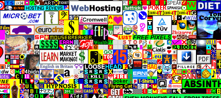

19. březen 2006, 22:18 Kategorie: Webdesign
Přehnané použití logotypů pro domnělou propagaci partnerů čehokoliv se stává morem, který zasahuje nejen grafický, ale i webový design.

Million Dollar Homepage dovedla logotypovou mánii k absurditě. Ale chcete, aby takhle vypadaly vaše webové stránky?
Když se podíváte na prezentaci partnerů Evropské databanky, uvidíte asi 30 volně naskládaných logotypů s odkazem na stránky partnerských firem. Horší už to mají snad jenom bezhlavě-všechno-kasírující Rafťáci s prezentací sponzorů filmu.
Jaký to může pro partnery mít přínos?
- Přímou návštěvnost z kliků na logotyp?
Návštěvnost stránek “Partneři” je mizivá (u jednoho z našich webů jsem naměřil celých 0,43 % návštěv pro sekci toho názvu). A prokliky na stránky samotných partnerů? To bude tak malé číslo, že si jej ani neumím představit. Ano, přátelé, kvůli tohoto obsahu na stránky opravdu nikdo nechodí.
- Budování značky?
Buduje logo umístěné v džungli logotypů značku? S. Krug tomu tuším říkal Nascar efekt: když kolem vás projede závodní vůz olepený desítkou logotypů, zapamatujete si některý z nich? V Česku bychom tomu pak mohli říkat Extraliga efekt. Najdete puk v záplavě logotypů na ledových plochách české hokejové ligy?
- Zlepšení hodnocení ve vyhledávačích?
Platí sice, že každý odkaz je dobrý. Odkaz z obrázku (což je typický příklad odkazu z loga partnera) má ovšem nižší hodnotu a odkaz z houšti dalších může být vyhledávači považován za nefér kupčení s odkazy.
Dobrá, ale co když se přecejen chcete svým partnerům na webu nějak zavděčit?
Nerušte partnerství, buďte však užiteční
Pokud je to možné, prezentujte partnera pomocí obsahu atraktivního pro návštěvníka stránek. Věnoval například vašemu hudebnímu klubu partner zvukové vybavení? Napište stránku o tom, jak skvělý je ve vašem klubu zvuk, kdo jej zařídil a proč jste se rozhodli pro něj.
Mám pocit, že logotypy partnerů jsou materiál, který na web nepatří a je udržován jen jakousi nespecifikovanou potřebou a úchylkou pro značky.
Co vy na to? Máte jiné nápady, jak prezentovat spolupracující organizace na stránkách?
Ulož do
delicious,
linkuj.cz,
jagg.cz,
vybrali.sme.sk
Díky!
Diskuze
[ RSS této diskuze ]
mat, 19. 03. 06, 22:49, #
Petr, 19. 03. 06, 23:12, #
Vilém Málek, 20. 03. 06, 08:01, #
crackonosh, 20. 03. 06, 09:01, #
Martin Michálek, 20. 03. 06, 09:38, #
maeror, 20. 03. 06, 09:59, #
llook, 20. 03. 06, 12:11, #
Marcel Simonides, 20. 03. 06, 12:37, #
Martin Michálek, 20. 03. 06, 12:50, #
Martin Snížek, 20. 03. 06, 13:47, #
liba, 20. 03. 06, 15:48, #
Vilém Málek, 20. 03. 06, 20:23, #
llook, 21. 03. 06, 08:24, #
Jiří Bureš, 21. 03. 06, 18:30, #
Vilém Málek, 22. 03. 06, 12:22, #
Komentáře jsou uzavřeny